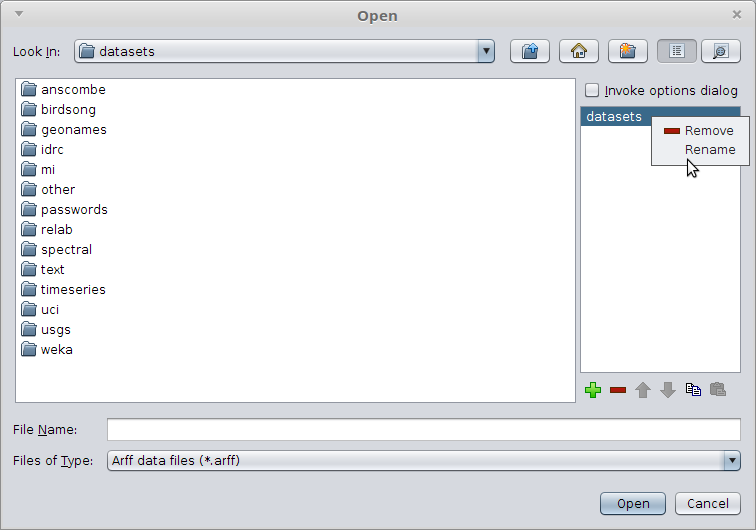

Bookmarks support
One long-standing annoyance in Weka's user interface was the opening and saving of files: you needed to click many times before you reached your destination. The only thing you were able to modify, for example for the Explorer, was the initial directory a file chooser was using (Explorer.props).
However, your datasets are usually distributed, especially when you are working on many projects, which renders a single starting directory ineffective, unfortunately.
Some time ago, when working on a consulting project using our ADAMS framework, I had to generated a large amount of screenshots and needed to save them in various locations under various names. The number of clicks that it required me to get to the target directories was driving me crazy. Half-way through, I stopped and hacked together a little bookmarks panel that allowed me to add and remove directories. Over time, this turned into a separate, little library called jfilechooser-bookmarks.
Yesterday, I incorporated this library into Weka by creating a custom javax.swing.JFileChooser class called weka.gui.WekaFileChooser which is now used through the core Weka user interface.
Here is an example of a file dialog:

Comments
Comments powered by Disqus